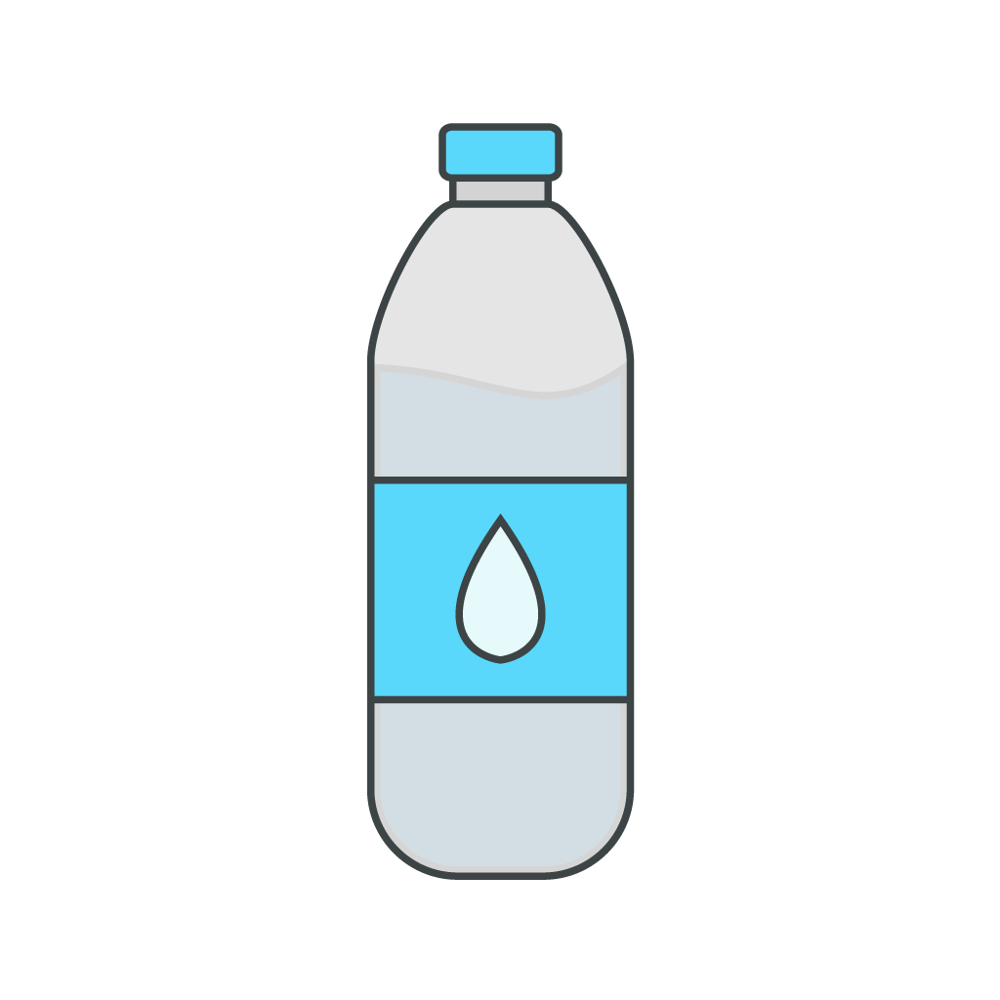

페트병 분리배출 가이드

이 쓰레기는 유색과 투명으로 나누어 분리해요

페트병은 어떻게 분리하나요?
"페트병은 투명한 병과 유색을 분리하여 따로 버려주세요!"
-
비우기: 페트병 안의 내용물을 깨끗이 비워 주세요.

-
압착하기: 페트병을 밟아서 압착해주세요.

-
분리수거: 플라스틱 수거함에 버려주세요.

-
비닐라벨 제거: 내용물을 비우고, 투명 페트병의 비닐라벨을 제거해 주세요.

-
압착하기: 페트병을 밟아서 압착해주세요.

-
분리배출: 뚜껑을 닫고, 투명 페트병 전용 수거함에 버려주세요.